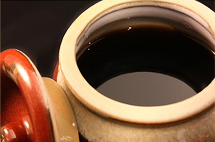
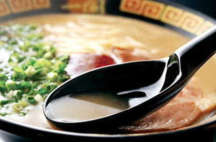
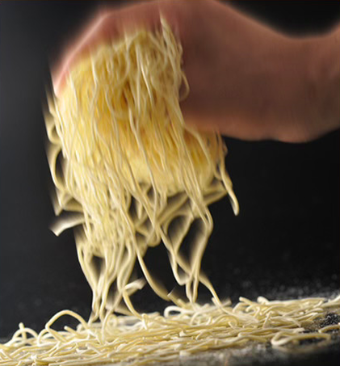

一蘭ではメニューを多様化せず「天然とんこつラーメン」一本に絞り込んでいます。
40人以上もの専属職人が研究と情熱の全てをとんこつ
ラーメンに注ぎ、日夜研究し続けております。
一蘭はとんこつラーメンを世界一研究し、美味しさを永遠に追求し続けてまいります。
一蘭が元祖である『赤い秘伝のたれ』は、
数十種類の材料を熟成させた深い旨味が特徴で、ラーメンの中央に美しく盛り付けられます。
福岡の「一蘭の森」で一括製造されるこの味のレシピは、
社内でわずか4人しか知らない極秘の調合で守り抜かれています。
高度な特殊製法でアクを徹底的に除いた「100％天然とんこつスープ」は、
臭みがなく旨味だけを凝縮した純度の高い仕上がりです。
職人の味覚と数値による厳格な品質管理をクリアしたもののみを使用し、
最高の状態で提供するため、注湯後30秒以内に麺を入れるという時間制限まで徹底しています。
周囲を気にせずリラックスできる「味集中カウンター」は、副交感神経を優位に導き、
純粋に美味しさを享受できる理想的な食空間を作り出します。
本能のままに味に集中できるこの環境は、著名人や女性のお客様からも厚い支持をいただいており、
都会の喧騒を忘れて至福の一杯を堪能していただけます。
一人ひとりの好みに応えたいという
想いから生まれた「オーダーシステム」は、
麺の硬さやタレの量まで細かく選べる一蘭独自の元祖スタイルです。
元々は店主との対話から始まったこの仕組みにより、
現在もお客様それぞれの「最高の一杯」を確実にお届けしています。
声を出さずに注文できる一蘭発祥の「替玉プレート」は、チャルメラの音色と共に、
女性のお客様にも気兼ねなく博多の替玉文化を楽しんでいただける画期的な仕組みです。
お客様の恥ずかしさを解消するために生まれたこのシステムは、
今では一蘭の象徴として、替え玉を気軽に
堪能できる喜びを提供し続けています

ラーメンの味の要となる「出汁」。そのレシピを知る者は、
社内でも4人のみで、厳重な体制のもと製造されております。
店舗でお客様にご提供する際には、釜の蓋に付着した
微量な水滴や水蒸気でさえ出汁の中に戻し、
完璧に味の品質を守り続けております。

一蘭のとんこつスープは、こだわりの独自製法により
天然コラーゲンがたっぷり溶け出しております。
コラーゲンは、しなやかで病気になりにくい体を作るだけでなく
ハリのある肌を保つといわれております。

熟練の職人がその日の気候に合わせて打つ自家製麺を、
成分や水温まで徹底管理し、常に最適な状態で熟成させています。
茹で釜の温度や湯切りの回数に至るまで厳格なルールを課すことで、
麺本来の美味しさを最大限に引き出し提供いたします。
ただのとんこつラーメン専門店じゃない。
天然にこだわった理由がここにあります。